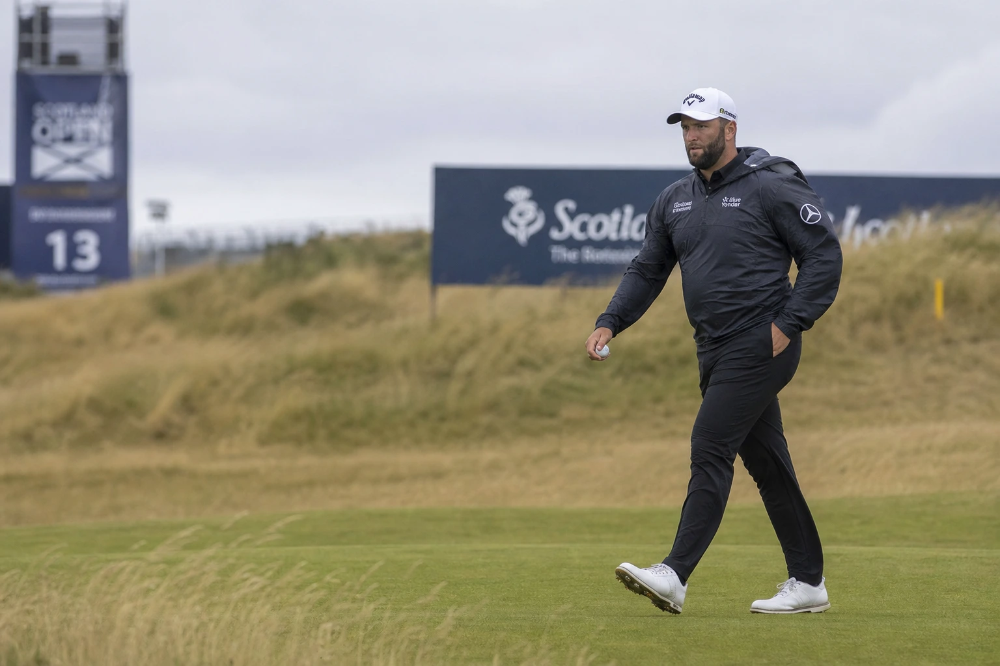

A dramatic second round in North Berwick has rearranged the board at the 2026 Genesis Scottish Open. Rory McIlroy signed for a clinical 4-under 66 to grab a share of the 36-hole lead at 9-under par, sitting alongside Jordan Smith and Tom Kim. The shock of the day, however, belonged to world No. 1 Scottie Scheffler. Carding a frustrating 72, Scheffler missed the cut by two strokes, snapping his historic streak of 78 consecutive made cuts—the fifth-longest run in golf history. McIlroy's tactical wedge adjustments and links mastery now take center stage as the field heads into a high-stakes weekend.

A Contrast of Fortunes at The Renaissance Club
Friday at the Genesis Scottish Open offered a stark study in competitive variance. One player walked off the 18th green at the Renaissance Club with a relaxed smile, his sights set on both a weekend trophy and next week's Open Championship at Royal Birkdale. The other headed straight for the parking lot and the airport, digesting a rare, early exit from a tour site. Rory McIlroy and Scottie Scheffler, the two focal points of modern professional golf, could not have had more divergent afternoons under the heavy, gray skies of East Lothian.
While McIlroy navigated the gusty crosswinds with tactical discipline, Scheffler struggled to find his trademark rhythm. The result was a leaderboard that is wide open at the top, a historic streak brought to an unexpected end, and a weekend setup that promises pure, high-stakes drama.
McIlroy's Tactical Wedge Mastery and Birkdale Prep
Rory McIlroy looks loose, confident, and highly analytical. Playing his first competitive rounds since the heartbreak of the U.S. Open, McIlroy took on a difficult afternoon scoring window and carved out a 4-under 66. At 9-under par overall, he sits in a three-way tie at the top of the leaderboard. This is familiar territory for McIlroy, who won this event in 2023 and has amassed three top-five finishes in three career visits to the Renaissance Club.
The secret to McIlroy's success this week lies in a strategic equipment modification. To cope with the exceptionally firm, baked-out turf in North Berwick, McIlroy put a new wedge in the bag, optimizing the bounce angles to slide cleanly beneath the ball on tight links lies. The adjustment isn't just about this week; it's a forward-looking measure for Royal Birkdale, where the ground is expected to be just as hard and unforgiving. By adapting his equipment and approach, McIlroy made Friday's challenging conditions look remarkably simple.
The Snapping of the Machine: Scottie Scheffler's Historic Run Ends
For almost four years, Scottie Scheffler playing on the weekend was the safest bet in sports. That run is over. A slow start on Friday yielded a 2-over 72, leaving him at even-par overall and on the wrong side of the 2-under cut line. The missed cut snaps his historic streak of 78 consecutive made cuts, a run of consistency unmatched by anyone in the modern era except Tiger Woods, who reached 142 straight more than two decades ago.
Scheffler was characteristically blunt about his performance. He failed to get his ball close enough to the pin on approach, leaving himself with lengthy, defensive putts instead of aggressive birdie opportunities. It marks the first genuinely rough patch of his 2026 season—a year where he has dominated the ball-striking statistics but has struggled to convert that dominance into multiple trophies. The timing is particularly jarring, coming just seven days before he is scheduled to defend his Open Championship crown at Birkdale.
The Co-Leaders: Jordan Smith's 63 and Tom Kim's Resurgence
While McIlroy command the headlines, he shares the lead with two players performing at the peak of their powers. England's Jordan Smith owned the morning wave, firing a blistering 9-under 63—the low round of the week—to post the early clubhouse target at 9-under 131. Smith's round was highlighted by a run of four consecutive birdies early on the back nine, all struck inside 10 feet. To shoot a score like that in these winds demands immediate attention from the rest of the field.
Tom Kim rounds out the leading trio, and his path back to the top of a leaderboard has been hard-earned. After dropping outside the world's top 100, Kim found his game during a quiet stretch away from the intense media spotlight. He secured his Birkdale ticket with a T3 finish at the U.S. Open, and he carried that momentum into Friday, highlighted by a spectacular 40-foot eagle putt on the par-5 seventh hole and two clutch birdies over his final five holes.
Gotterup's Chaos and Von Dellingshausen's Birkdale Dream
The defending champion, Chris Gotterup, remains firmly in the mix, but his path to a 2-under 68 on Friday was anything but routine. Standing on the 18th tee just one stroke off the lead, Gotterup pulled his drive into the thick rough. His subsequent recovery shot came out hot, running nearly 100 yards through the green before settling against a TV tower. After taking relief, Gotterup chipped the ball stone dead to salvage a par, keeping himself just two shots off the pace. Fresh off a win at the John Deere Classic, the aggressive American looks completely comfortable in the marquee pairings alongside McIlroy and Robert MacIntyre.
Further down the leaderboard, the stakes are of a different nature. The Genesis Scottish Open offers three qualifying spots for the Open Championship to the highest finishers not already exempt. Germany's Nicolai Von Dellingshausen, ranked 258th in the world, finds himself right in the thick of that chase. Von Dellingshausen admitted that the nerves were jangling as he competed in the strongest field he has faced all season. For players in his position, a strong weekend in Scotland doesn't just mean a check—it represents a career-altering ticket to Birkdale.
The Raw Read
This is links golf at its absolute best: high-stakes drama acting as a prelude to a major. Rory McIlroy's positioning at the top of the board is the story the tournament directors wanted. He looks free, creative, and in complete control of his swing. If he continues to strike his iron shots with the same trajectory control he showed on Friday, the rest of the field will face an uphill battle.
But the real takeaway from Round 2 is the reminder that even Scottie Scheffler is human. A player who has looked invincible for years was brought down by links variance and a cold putter. It opens up the tournament, invites the challengers in, and ensures that the weekend rounds at the Renaissance Club are mandatory viewing for anyone who appreciates the raw reality of the game.
Frequently Asked Questions
Who leads the 2026 Genesis Scottish Open?
Rory McIlroy, Jordan Smith, and Tom Kim share the lead at 9-under par following the completion of Round 2 at the Renaissance Club.
Did Scottie Scheffler miss the cut at the Scottish Open?
Yes. Scheffler shot rounds of 68 and 72 to finish at even-par, missing the 2-under cut line by two strokes and ending his streak of 78 consecutive made cuts.
What did Rory McIlroy shoot in Round 2?
McIlroy carded a 4-under 66 in windy afternoon conditions to climb into a share of the lead.
Who had the low round of the tournament?
England's Jordan Smith shot a 7-under 63 during the second round to post a 36-hole total of 9-under 131.
Is Chris Gotterup still in contention?
Yes. The defending champion sits at 7-under par, just two shots off the lead, despite a wild adventure on the 18th hole on Friday.
Why does the Scottish Open leaderboard matter for The Open?
In addition to the tournament title, the event offers three qualifying spots for the Open Championship at Royal Birkdale to the top finishers who are not already exempt.